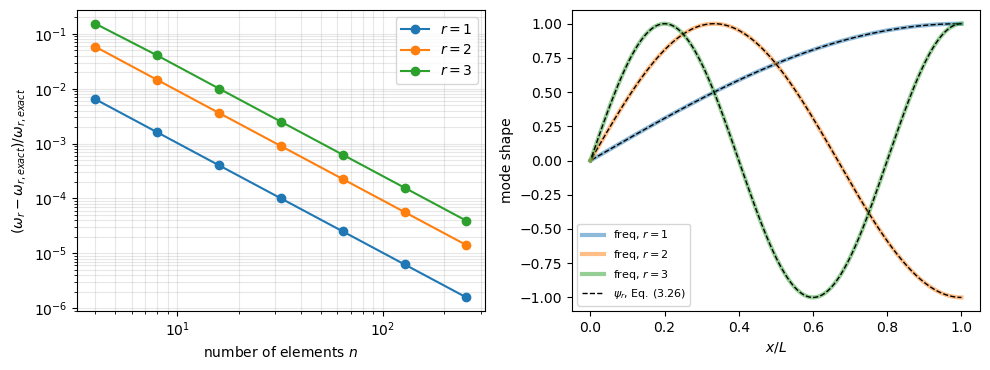
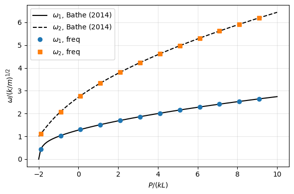
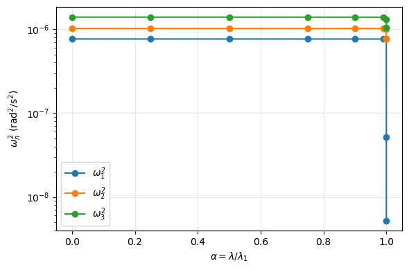

Frequency analysis#
The function freq solves the eigenvalue problem \((\boldsymbol{K} + \lambda^2 \boldsymbol{M}) \boldsymbol{u} = \boldsymbol{0}\), where \(\lambda^2 = -\omega_n^2\) and \(\omega_n\) is the natural frequency in rad/s. The returned lambda2 are therefore negative for a stable structure, and
omega = np.sqrt(-lambda2) # rad/s
f = omega/(2*np.pi) # Hz
with np.sqrt(-lambda2 + 0j) when lambda2 may be complex or positive, e.g. beyond a flutter or a divergence load, see Follower loads and unsymmetric matrices.
This example calculates the natural frequencies of the clamped-free rod of Petyt (2010), Example 3.3, compared with his results and with the exact solution, shows the options of freq, and the frequencies of a prestressed plate.
Reference. Petyt, M., Introduction to Finite Element Vibration Analysis, 2nd ed., Cambridge University Press, 2010. https://doi.org/10.1017/CBO9780511761195
[1]:
%matplotlib inline
import os
import numpy as np
import matplotlib.pyplot as plt
from scipy.linalg import eigh
from scipy.sparse import csc_matrix, diags, lil_matrix, load_npz
from structsolve import freq, lb
Clamped-free rod#
The rod of length \(L\), Young’s modulus \(E\), density \(\rho\) and cross-sectional area \(A\), clamped at \(x = 0\) and free at \(x = L\), is divided into \(n\) elements of length \(l = L/n\) with linear displacements, whose stiffness and consistent inertia matrices are (Petyt 2010, Example 3.3, p. 62)
The degree of freedom of the clamped end is removed. The function below is the model of the test test_freq_simple of tests/test_freq.py, here with \(E = \rho = A = L = 1\):
[2]:
def rod_clamped_free(num_elements, E=1., rho=1., A=1., L=1.):
# K and M of the clamped-free rod, without the clamped dof
n = num_elements + 1
K = lil_matrix((n, n))
M = lil_matrix((n, n))
le = L/num_elements
ke = E*A/le*np.array([[1., -1.], [-1., 1.]])
me = rho*A*le/6*np.array([[2., 1.], [1., 2.]])
for e in range(num_elements):
K[e:e+2, e:e+2] += ke
M[e:e+2, e:e+2] += me
return csc_matrix(K[1:, 1:]), csc_matrix(M[1:, 1:])
Two elements: Petyt’s Example 3.3#
With two elements and \(\Lambda = \omega^2 \rho L^2/(24 E)\), the frequency equation is \(7 \Lambda^2 - 10 \Lambda + 1 = 0\), whose roots give \(\omega = (24 \Lambda)^{1/2} (E/(\rho L^2))^{1/2} = 1.610\) and \(5.628\) (Petyt 2010, p. 63, Table 3.3, in units of \((E/(\rho L^2))^{1/2}\)). The dense solver of freq, sparse_solver=False, computes all the eigenvalues of this model of two degrees of freedom:
[3]:
K, M = rod_clamped_free(2)
lambda2, eigvecs = freq(K, M, silent=True, sparse_solver=False)
omega = np.sqrt(-lambda2.real)
Lambda = np.sort(np.roots([7., -10., 1.]))
omega_eq = np.sqrt(24*Lambda)
omega_table = np.array([1.610, 5.628])
print(f'{"mode":>4s} {"omega (freq)":>14s} {"roots of eq.":>14s} {"rel. diff.":>10s}'
f' {"Table 3.3":>10s} {"rel. diff.":>10s}')
for i in range(2):
print(f'{i+1:4d} {omega[i]:14.10f} {omega_eq[i]:14.10f}'
f' {abs(omega[i] - omega_eq[i])/omega_eq[i]:10.1e}'
f' {omega_table[i]:10.3f} {abs(omega[i] - omega_table[i])/omega_table[i]:10.1e}')
mode omega (freq) roots of eq. rel. diff. Table 3.3 rel. diff.
1 1.6114156823 1.6114156823 1.4e-16 1.610 8.8e-04
2 5.6293031349 5.6293031349 3.2e-16 5.628 2.3e-04
The relative differences against Table 3.3 are those of its three digits.
Convergence to the exact frequencies#
The exact natural frequencies and mode shapes of the rod are (Petyt 2010, Eq. (3.26), p. 49)
With 300 elements, the sparse solver computes the five lowest frequencies, num_eigvalues=5:
[4]:
n = 300
K, M = rod_clamped_free(n)
lambda2, eigvecs = freq(K, M, silent=True, num_eigvalues=5,
sparse_solver=True)
omega = np.sqrt(-lambda2.real)
r = np.arange(1, 6)
omega_exact = (2*r - 1)*np.pi/2
print(f'{"r":>2s} {"omega (freq)":>14s} {"Eq. (3.26)":>14s} {"rel. diff.":>10s}')
for i in range(5):
print(f'{r[i]:2d} {omega[i]:14.8f} {omega_exact[i]:14.8f}'
f' {(omega[i] - omega_exact[i])/omega_exact[i]:10.2e}')
r omega (freq) Eq. (3.26) rel. diff.
1 1.57079812 1.57079633 1.14e-06
2 4.71243743 4.71238898 1.03e-05
3 7.85420593 7.85398163 2.86e-05
4 10.99618976 10.99557429 5.60e-05
5 14.13847505 14.13716694 9.25e-05
The finite element frequencies are higher than the exact ones, and the relative difference grows with the mode number. It decreases with the number of elements, here for the first three frequencies:
[5]:
ns = [4, 8, 16, 32, 64, 128, 256]
errs = []
for n_el in ns:
K_, M_ = rod_clamped_free(n_el)
l2, _ = freq(K_, M_, silent=True, sparse_solver=False)
w = np.sqrt(-l2.real)[:3]
errs.append((w - omega_exact[:3])/omega_exact[:3])
errs = np.array(errs)
print(f'{"n":>4s}' + ''.join(f' {"rel. diff. r=" + str(i+1):>15s}' for i in range(3)))
for n_el, e in zip(ns, errs):
print(f'{n_el:4d}' + ''.join(f' {ei:15.3e}' for ei in e))
fig, axes = plt.subplots(1, 2, figsize=(10, 3.8))
for i in range(3):
axes[0].loglog(ns, errs[:, i], 'o-', label=f'$r = {i+1}$')
axes[0].set_xlabel('number of elements $n$')
axes[0].set_ylabel(r'$(\omega_r - \omega_{r,exact})/\omega_{r,exact}$')
axes[0].grid(True, which='both', alpha=0.3)
axes[0].legend()
x = np.linspace(1./n, 1., n)
for i in range(3):
u = eigvecs[:, i].real
psi = np.sin((2*r[i] - 1)*np.pi*x/2)
u = u*(u @ psi)/(u @ u) # scaled to the exact mode shape
axes[1].plot(np.concatenate(([0.], x)), np.concatenate(([0.], u)),
'-', lw=3, alpha=0.5, label=f'freq, $r = {i+1}$')
axes[1].plot(x, psi, 'k--', lw=1)
axes[1].plot([], [], 'k--', lw=1, label=r'$\psi_r$, Eq. (3.26)')
axes[1].set_xlabel('$x/L$')
axes[1].set_ylabel('mode shape')
axes[1].legend(fontsize=8)
plt.tight_layout()
plt.show()
n rel. diff. r=1 rel. diff. r=2 rel. diff. r=3
4 6.437e-03 5.832e-02 1.535e-01
8 1.607e-03 1.451e-02 4.048e-02
16 4.016e-04 3.618e-03 1.007e-02
32 1.004e-04 9.038e-04 2.512e-03
64 2.510e-05 2.259e-04 6.276e-04
128 6.275e-06 5.648e-05 1.569e-04
256 1.569e-06 1.412e-05 3.922e-05

The relative difference decreases by a factor of about four when the number of elements doubles, as printed above, and the mode shapes of 300 elements, scaled by least squares, coincide with \(\psi_r\).
Options#
symmetric:False, the default, uses the general solvers, valid for unsymmetric matrices, and returns complex arrays.Trueuses the solvers of symmetric matrices, which require a positive definiteM, and returns real arrays;Nonechecks the symmetry of the matrices.Normalization: with
symmetric=True, the eigenvectors are normalized with respect toM, \(\boldsymbol{u}_i^\top \boldsymbol{M} \boldsymbol{u}_j = \delta_{ij}\). Otherwise the sparse solver returns eigenvectors normalized with respect toMand the dense solver eigenvectors with unit Euclidean norm, see freq; an application that needs a given normalization applies it to the returned eigenvectors.sort:sort=True, the default, sortslambda2and the eigenvectors together by increasing natural frequency and removes the eigenpairs with \(\omega_n \le 10^{-6}\) rad/s, e.g. rigid-body modes, such that fewer thannum_eigvaluesmay be returned.sort=Falsekeeps the order of the solver.num_eigvalues: the number of eigenvalues computed by the sparse solver, those closest to a negative shift, i.e. the lowest frequencies. See Accuracy of the eigenvalue solutions for the verification of the results.
The model below, of the test test_freq_sort of tests/test_freq.py, has twelve degrees of freedom of unit mass: ten springs to the ground, of stiffnesses multiple of 100 in a random order, and a free-free pair of degrees of freedom connected by a spring of stiffness 50, whose \(\omega_n^2\) are 0 (a rigid-body mode) and 100. The reference is the dense solver scipy.linalg.eigh, independent of freq.
[6]:
rng = np.random.RandomState(3)
n = 12
k = rng.permutation(np.arange(1, n + 1, dtype=float))*100
Kd = np.diag(k)
Kd[:2, :2] = 50.*np.array([[1., -1.], [-1., 1.]])
Md = np.eye(n)
K, M = csc_matrix(Kd), csc_matrix(Md)
w2_ref = eigh(Kd, Md, eigvals_only=True)
print('omega_n^2, scipy.linalg.eigh:', np.round(w2_ref, 8))
for sort in [False, True]:
lambda2, eigvecs = freq(K, M, silent=True, num_eigvalues=6, sort=sort,
sparse_solver=True, symmetric=True)
print(f'omega_n^2, freq with sort={sort}:', np.round(-lambda2, 8))
omega_n^2, scipy.linalg.eigh: [ 0. 100. 100. 200. 300. 400. 700. 800. 900. 1000. 1100. 1200.]
omega_n^2, freq with sort=False: [ 0. 100. 100. 200. 300. 400.]
omega_n^2, freq with sort=True: [100. 100. 200. 300. 400.]
With sort=True, the rigid-body mode is removed and the five lowest non-null \(\omega_n^2\) are returned in increasing order, with their eigenvectors, normalized with respect to M with symmetric=True:
[7]:
lambda2, eigvecs = freq(K, M, silent=True, num_eigvalues=6, sort=True,
sparse_solver=True, symmetric=True)
omega2 = -lambda2
ref = w2_ref[w2_ref > 1e-6][:omega2.size]
print(f'{"mode":>4s} {"omega_n^2 (freq)":>17s} {"eigh":>10s} {"rel. diff.":>10s}')
for i in range(omega2.size):
print(f'{i+1:4d} {omega2[i]:17.10f} {ref[i]:10.4f}'
f' {abs(omega2[i] - ref[i])/ref[i]:10.1e}')
print()
print('max |U^T M U - I| =', np.abs(eigvecs.T @ M @ eigvecs - np.eye(omega2.size)).max())
mode omega_n^2 (freq) eigh rel. diff.
1 100.0000000000 100.0000 1.4e-16
2 100.0000000000 100.0000 0.0e+00
3 200.0000000000 200.0000 2.8e-16
4 300.0000000000 300.0000 1.9e-16
5 400.0000000000 400.0000 7.1e-16
max |U^T M U - I| = 4.440892098500626e-16
Prestressed structures#
The frequencies of a prestressed structure come from the stiffness matrix of the prestressed state, e.g. \(\boldsymbol{K} + \lambda \boldsymbol{K}_G\) with the geometric stiffness matrix \(\boldsymbol{K}_G\) of a reference load, see Linear buckling with a prestress, or the tangent stiffness matrix of a non-linear analysis. A compressive prestress reduces the frequencies, and the lowest one vanishes at the buckling load.
Column of two rigid bars#
The column of Bathe (2014), Example 3.14, two rigid weightless bars of length \(L\) with the concentrated masses \(m\) and \(m/2\) and springs whose stiffnesses are proportional to \(k\), under the axial load \(P\) (compression negative), has the eigenvalue problem (Bathe 2014, Example 3.14, p. 98, Eq. (c))
i.e. the stiffness matrix \(\boldsymbol{K} + \lambda \boldsymbol{K}_G\) of the linear buckling analysis of Linear buckling analysis, with \(\lambda = -P/L\), and the frequencies (p. 98)
The lowest frequency vanishes at the critical load \(P_{cr} = -2kL\) (p. 101). With \(k = m = L = 1\):
Reference. Bathe, K.J., Finite Element Procedures, 2nd ed., K.J. Bathe, Watertown, MA, 2014.
[8]:
k = m = L = 1.
K = np.array([[5*k, -2*k], [-2*k, 2*k]])
KG = np.array([[-2., 1.], [1., -1.]])
M = np.diag([m, m/2])
def omega_bathe(P):
s = np.sqrt(33*k**2/(4*m**2) + 8*P*k/(m**2*L) + 2*P**2/(m**2*L**2))
a = 9*k/(2*m) + 2*P/(m*L)
return np.sqrt(np.array([a - s, a + s]))
print(f'{"P/(kL)":>7s} {"omega_1":>10s} {"Bathe":>10s} {"rel. diff.":>10s}'
f' {"omega_2":>10s} {"Bathe":>10s} {"rel. diff.":>10s}')
for P in [-1.99, -1.9, -1., 0., 1., 5., 10.]:
lam = -P/L
lambda2, _ = freq(csc_matrix(K + lam*KG), csc_matrix(M), silent=True,
sparse_solver=False, symmetric=True)
w = np.sqrt(-lambda2)
ref = omega_bathe(P)
print(f'{P/(k*L):7.2f} {w[0]:10.6f} {ref[0]:10.6f} {abs(w[0] - ref[0])/ref[0]:10.1e}'
f' {w[1]:10.6f} {ref[1]:10.6f} {abs(w[1] - ref[1])/ref[1]:10.1e}')
Ps = np.linspace(-2., 10., 121)
fig, ax = plt.subplots(figsize=(6, 4))
ref = np.array([omega_bathe(P) for P in Ps])
ax.plot(Ps, ref[:, 0]/np.sqrt(k/m), 'k-', label=r'$\omega_1$, Bathe (2014)')
ax.plot(Ps, ref[:, 1]/np.sqrt(k/m), 'k--', label=r'$\omega_2$, Bathe (2014)')
w = []
for P in Ps[1::10]:
lambda2, _ = freq(csc_matrix(K - P/L*KG), csc_matrix(M), silent=True,
sparse_solver=False, symmetric=True)
w.append(np.sqrt(-lambda2))
w = np.array(w)
ax.plot(Ps[1::10], w[:, 0], 'o', label=r'$\omega_1$, freq')
ax.plot(Ps[1::10], w[:, 1], 's', label=r'$\omega_2$, freq')
ax.set_xlabel('$P/(kL)$')
ax.set_ylabel(r'$\omega/(k/m)^{1/2}$')
ax.grid(True, alpha=0.3)
ax.legend()
plt.tight_layout()
plt.show()
P/(kL) omega_1 Bathe rel. diff. omega_2 Bathe rel. diff.
-1.99 0.140713 0.140713 1.1e-14 1.010049 1.010049 2.2e-16
-1.90 0.424717 0.424717 7.8e-16 1.104362 1.104362 2.0e-16
-1.00 1.000000 1.000000 2.2e-16 2.000000 2.000000 0.0e+00
0.00 1.275821 1.275821 1.7e-16 2.715195 2.715195 0.0e+00
1.00 1.492648 1.492648 3.0e-16 3.282073 3.282073 0.0e+00
5.00 2.141935 2.141935 2.1e-16 4.940862 4.940862 0.0e+00
10.00 2.742640 2.742640 0.0e+00 6.440336 6.440336 0.0e+00

Plate#
The matrices of a simply supported plate under uniaxial compression, built with panels, are saved in tests/data; the mass matrix here is diagonal, with random masses between 1 and 2, as in the test test_freq_prestressed_plate of tests/test_freq.py. The critical load multiplier \(\lambda_1\) comes from lb, and the five lowest frequencies are calculated for the prestress \(\lambda = \alpha \lambda_1\),
\(0 \le \alpha < 1\).
The reference of each \(\omega_n^2\) is the dense solver scipy.linalg.eigh. The eigenvalues of this model span many orders of magnitude, and the round-off of any solver in double precision limits the relative accuracy of an eigenvalue \(\omega_n^2\) to about \(\epsilon\, \omega_{max}^2/\omega_n^2\), with the machine epsilon \(\epsilon\) and the highest eigenvalue \(\omega_{max}^2\); this bound is printed with the relative differences:
[9]:
data = os.path.join('..', 'tests', 'data')
K = load_npz(os.path.join(data, 'plate_ssss_Nxx_K.npz')).tocsr()
KG = load_npz(os.path.join(data, 'plate_ssss_Nxx_KG.npz')).tocsr()
rng = np.random.RandomState(3)
M = diags(1. + rng.rand(K.shape[0])).tocsr()
print('degrees of freedom:', K.shape[0])
lambda_1 = lb(K, KG, silent=True, sparse_solver=False)[0][0]
print('critical load multiplier lambda_1 =', lambda_1)
eps = np.finfo(float).eps
alphas = [0., 0.25, 0.5, 0.75, 0.9, 0.99, 1 - 1e-4, 1 - 1e-6, 1 - 1e-7]
w2 = []
print()
print(f'{"alpha":>10s} {"omega_1^2 freq":>15s} {"omega_1^2 eigh":>15s}'
f' {"rel. diff.":>10s} {"bound":>8s} {"max rel. diff. n=1..5":>22s}')
for alpha in alphas:
KT = K + alpha*lambda_1*KG
lambda2, eigvecs = freq(KT, M, silent=True, num_eigvalues=5,
symmetric=True)
w2_freq = -lambda2
w2_ref = eigh(KT.toarray(), M.toarray(), eigvals_only=True)
bound = eps*w2_ref.max()/w2_ref[0]
w2_ref = w2_ref[:5]
rel = np.abs(w2_freq - w2_ref)/w2_ref
w2.append(w2_freq)
print(f'{alpha:10.7f} {w2_freq[0]:15.8e} {w2_ref[0]:15.8e} {rel[0]:10.1e}'
f' {bound:8.1e} {rel.max():22.1e}')
w2 = np.array(w2)
degrees of freedom: 300
critical load multiplier lambda_1 = 157.5386247168361
alpha omega_1^2 freq omega_1^2 eigh rel. diff. bound max rel. diff. n=1..5
0.0000000 7.65886516e-07 7.65886512e-07 5.6e-09 1.3e-04 6.9e-09
0.2500000 7.65530689e-07 7.65530687e-07 2.5e-09 1.3e-04 3.8e-09
0.5000000 7.65173660e-07 7.65173656e-07 5.1e-09 1.3e-04 6.5e-09
0.7500000 7.64814856e-07 7.64814855e-07 1.3e-09 1.3e-04 6.4e-09
0.9000000 7.64598103e-07 7.64598102e-07 7.9e-10 1.3e-04 1.6e-09
0.9900000 7.64467088e-07 7.64467097e-07 1.1e-08 1.3e-04 1.6e-08
0.9999000 7.64452352e-07 7.64452349e-07 3.2e-09 1.3e-04 1.4e-08
0.9999990 5.18398293e-08 5.18376057e-08 4.3e-05 1.9e-03 4.3e-05
0.9999999 5.23515272e-09 5.23455597e-09 1.1e-04 1.9e-02 1.1e-04
The lowest frequencies of the plate hardly change with the prestress, except the frequency of the buckling mode, which decreases to zero and becomes the lowest close to \(\lambda_1\). There, \(\omega_1^2\) is proportional to \(1 - \alpha\): reducing \(1 - \alpha\) ten times reduces \(\omega_1^2\) about ten times, within the round-off bound of the table:
[10]:
ratio = w2[-2, 0]/w2[-1, 0]
print('omega_1^2(alpha = 1 - 1e-6)/omega_1^2(alpha = 1 - 1e-7) =', ratio,
', rel. diff. to 10:', abs(ratio - 10)/10)
fig, ax = plt.subplots(figsize=(6, 4))
for i in range(3):
ax.semilogy(alphas, w2[:, i], 'o-', label=r'$\omega_%d^2$' % (i + 1))
ax.set_xlabel(r'$\alpha = \lambda/\lambda_1$')
ax.set_ylabel(r'$\omega_n^2$ (rad$^2$/s$^2$)')
ax.grid(True, alpha=0.3)
ax.legend()
plt.tight_layout()
plt.show()
omega_1^2(alpha = 1 - 1e-6)/omega_1^2(alpha = 1 - 1e-7) = 9.902257302235256 , rel. diff. to 10: 0.009774269776474397
